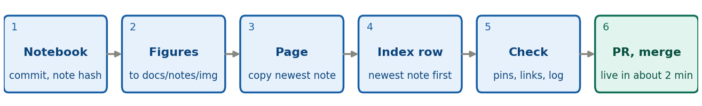

For a note you write yourself: an HTML page in
docs/notes/ and one row in the front-page table. (Student
notes are Markdown in notes/src/; see the box at the bottom
and the student
cheat-sheet.) Start from develop, on a branch:
git switch -c feature/note-NN-short-name (NN is the next
note number; a follow-up takes a letter, like 2a).

R76/analysis_notes/, run it top to bottom, and commit it
with any library change. Note the short hash:
git rev-parse --short HEAD. Re-running some notebooks
leaves metadata churn, so read git diff before committing.
Never run 07221203_2025_dump1_noise.ipynb without approval
(it rewrites archives/good_noise.h5).docs/notes/img/, named for the series and the content,
for example dump1_bstd_time.png.note-02a-bstd-vs-time.html, to
docs/notes/note-NN-slug.html. Edit the
<title>, the <h1> (write it as a
question), the meta line
(Note NN · Author(s) · date · Status), and the
<nav class="outline"> with an id on
every <h2>. Sections: Code Repository, Data and
setup, The question, one section per result
(<figure>, alt text, caption), Reading, Caveats, Next
steps.python/ uses the commit hash, never a branch name: under
the repository URL, blob/<hash>/<path> for a
file and tree/<hash>/<folder> for a folder.
Check each one: git cat-file -e <hash>:<path>
prints nothing when the file exists.<tr> to the
Analysis Notes table in docs/index.html, newest
note first. Columns: Note #, Link, Date, Author, Title,
Description, Keywords, Status, Presentation. The status badge is
<span class="status in-progress"> (or
complete, outdated, abandoned,
brainstorm).[Unreleased] in CHANGELOG.md (a new note is a
patch-level change). Open the page from disk in a browser: figures show,
links work. If you touched python/, run
cd python && python -m pytest -q.git push -u origin feature/note-NN-short-name, then
gh pr create --base develop --fill. When the checks are
green, merge: the page is live in about two minutes.Updating a note is the same loop, on a new branch
from develop. Check its status first: a
Complete note is left alone (a follow-up takes a
letter, like 2a after 2), an In progress note can
change freely, and a note that a later one replaces becomes
Outdated with a link to the newer one. If you re-ran
anything, re-pin the links to the new hash and replace the PNGs. Update
the date and status in the page’s meta line and in its
row of docs/index.html (the row is hand-edited, so the two
can drift). A wrong result stays in the note, corrected and dated; never
delete a published note.
Rules. A Complete note gets only a minimal correction, and only when a library rename makes it wrong. A breaking library change means updating the notebooks that use it, or marking them deprecated (the red box described on the front page). Any whole-trace spectrum must skip the leading glitch samples. A segment is a run of same-trigger events; a run is a whole data-taking period.
Reviewing a student note. The PR into
develop shows a green check and nothing is public. Change
id: "TBD" to the next S-number (S1, S2, …), commit it to
the PR branch, and merge. The bot builds the page and the index row, and
it is live in 2 to 3 minutes. When a student updates a published note,
check the header still has its S-number: TBD passes the PR
check, but the build refuses it and nothing is published until you fix
it. To remove a note, delete its source file in a PR; the next build
removes the page.